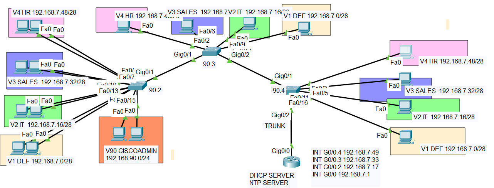

Multi-VLAN Network with Router-on-a-Stick & Centralized DHCP
This Packet Tracer topology simulates a multi‑VLAN enterprise network with router‑on‑a‑stick inter‑VLAN routing and a centralized DHCP server for dynamic IP addressing and seamless cross‑VLAN communication.
